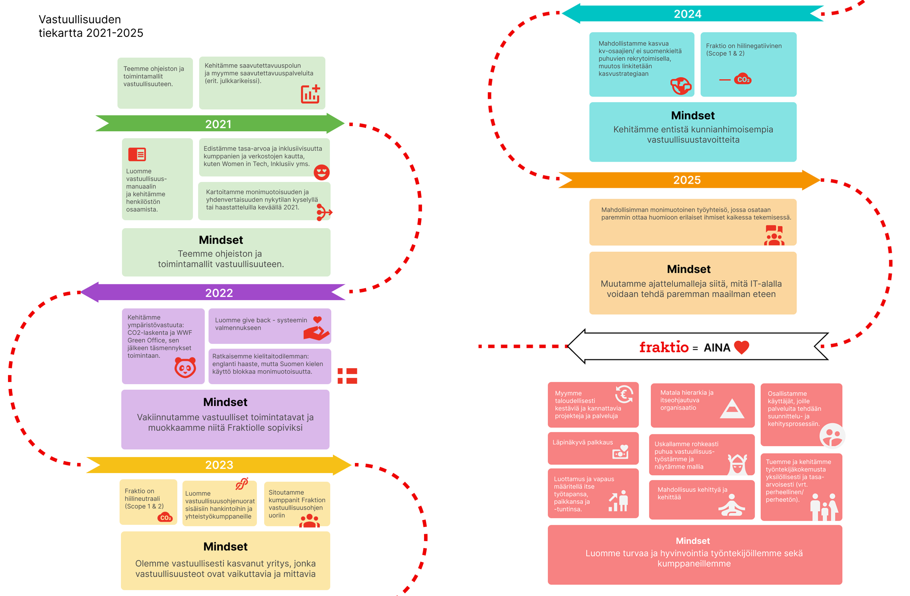

Fraktio
Service Design
2022
This project explored what kind of impact sustainability can have and how it can function as a company’s unique selling point (USP).
We conducted benchmarking and developed a communication plan, along with a sustainability roadmap visualized for the company’s website.
Based on our findings, we recommended more concrete and transparent communication of sustainability efforts, including a publicly accessible responsibility roadmap. We also suggested strengthening visibility by highlighting cooperation networks, partners, and direct links to their websites.
